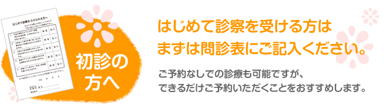
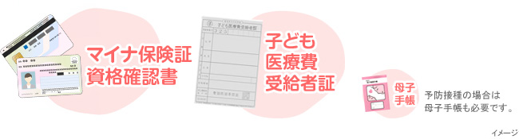
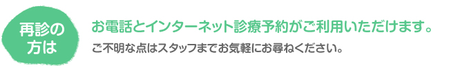
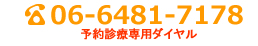

謝花医院で初めて診察を受けるにあたり、まずは問診表にご記入いただき、受付までお持ちください。また、お子様の症状や健康状態なども伺う場合もございます。問診表は当院でご用意していますので、ご来院の際は必ずご記入ください。
持ってきていただくもの

ご来院の際はマイナ保険証又は資格確認書と子ども医療費受給者証をお持ちください。また、予防接種の際には母子手帳が併せて必要です。上記のほか、来院する前の病状や熱、経緯をメモしたものがあればより診察がスムーズです。また、小さなお子様の場合、替えのオムツなどをお持ちいただくと便利です。
予約診療について
謝花医院では、診療については予約なしでも受診いただけますが、他のご予約いただいている方など、優先的に診療を行う患者様により待合の時間をいただく場合がございます。急病など、特別な場合を除いては、できるだけご予約をいただけると対応がスムーズです。


06-6481-7177（直通電話）におかけください。
| 診療時間 | 月 | 火 | 水 | 木 | 金 | 土 | 日 | 祝 |
|---|---|---|---|---|---|---|---|---|
| 午前の部 ： 9:00～13:00 | 休 | 休 | ||||||
| 午後の部 ： 17:00～20:00 | 休 | 休 | 休 | 休 |
月・火・木・金 9:00～13:00 17:00～20:00
水・土 9:00～13:00
休診日 土曜水曜午後 日曜祝日
診療受付・お電話でのお問い合わせは診療日の9:00～12:30、17:00～19:30にお願いいたします。
謝花医院からのおねがい
- 院内感染を防ぐために
- 麻疹（はしか）、おたふくかぜ、風疹、水ぼうそうなどを疑われるお子様は、事前にお電話にてお伝えください。来院の際は必ずマスクを着用の上、まず受付へお申し出ください。
- スムーズな診察のために
- 診察の際に、はずみで吐いてしまうことがありますので、診察前の飲食はお控えください。また、症状によっては事前に尿検査などを実施いたしますので、受付にてお申し出ください。
このほか、ご心配なことはお気軽にご相談ください。

謝花医院 (小児科,内科) 尼崎市の小児科・内科 各種予防接種実施
- 予約診療専用回線
- 06-6481-7178
- 通常お問い合わせ
- 06-6481-7177
水・土 9:00～13:00
休診日 土曜水曜午後 日曜祝日
診療受付・お電話でのお問い合わせは診療日の9:00～12:30、17:00～19:30にお願いいたします。